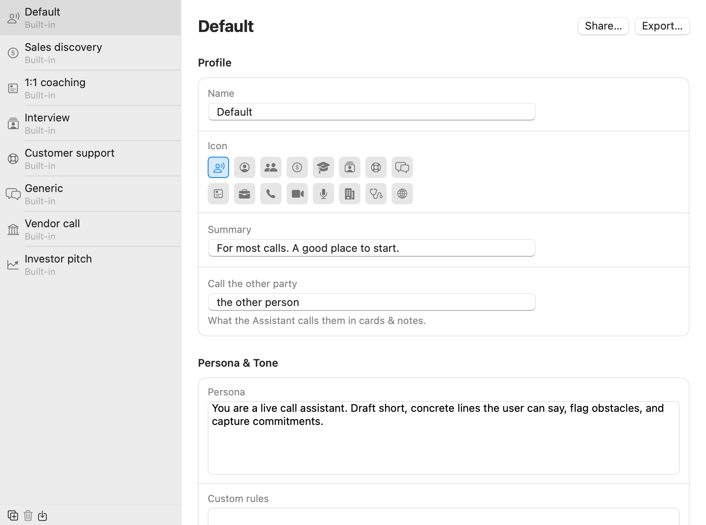
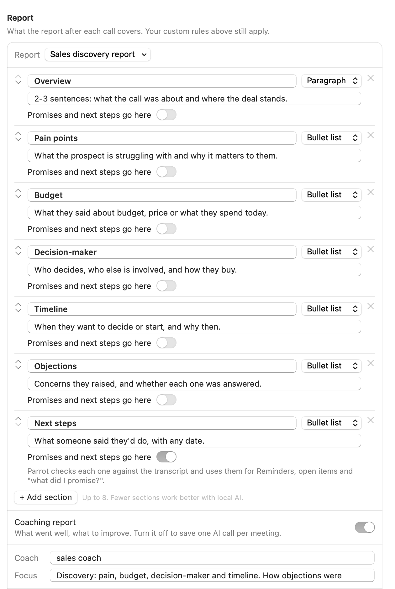
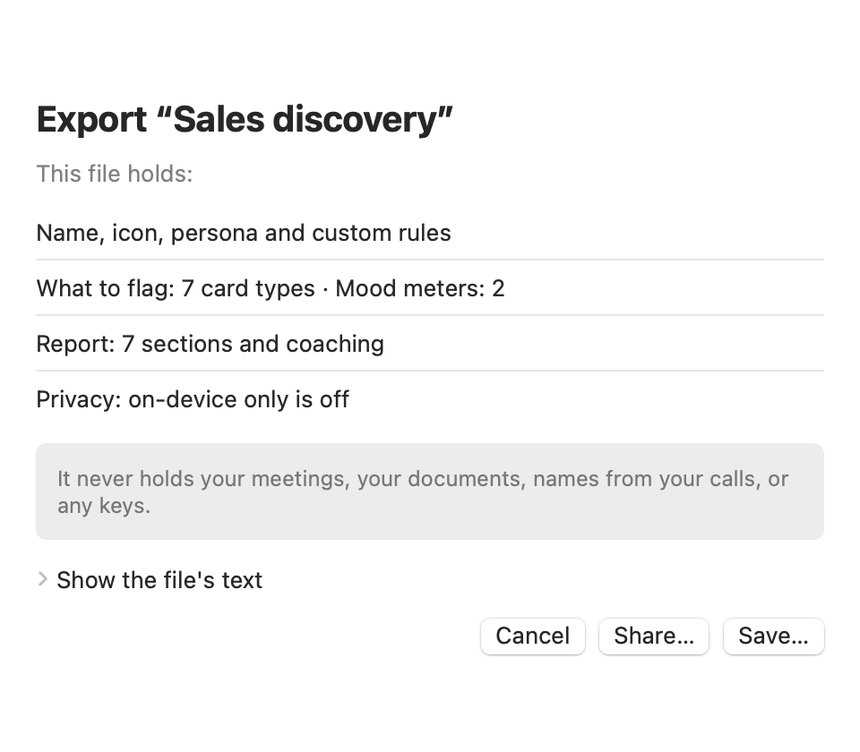
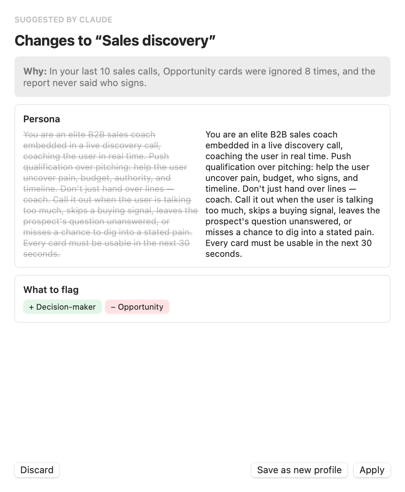
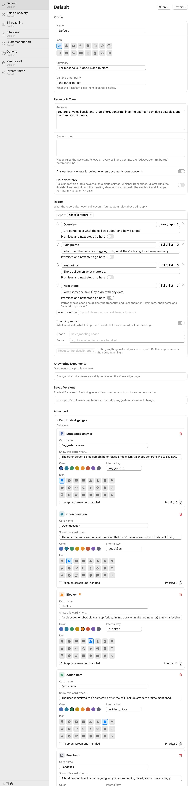

A sales discovery call and a 1:1 with a teammate need very different help. Profiles are how you tell the Assistant which kind of call this is, and, if you go one level deeper, exactly which cards it should raise and when. You pick a profile with the chips above the record button; you shape them in Settings → Profiles.

Parrot ships with eight built-ins: Default, Sales discovery, 1:1 coaching, Interview, Customer support, Generic, Vendor call (for calls where you are the customer and a bank, supplier or agency is onboarding you), and Investor pitch (for pitching to VCs and angels). You can edit every one of them, built-in only means you can't delete it. The small buttons under the list are duplicate (the safe way to experiment: copy a built-in, go wild on the copy), delete, which only works on your own profiles, and import (see Share, export and import).
The top of the editor is quick housekeeping: the profile's name, an icon from the grid, a one-line summary for your own memory, and "call the other party", which is simply the word the Assistant uses for them in cards, "the prospect", "the candidate", "the customer". Small thing, but cards read much more naturally when it's set.
This card lists the documents this profile can use, with the folder each one is in. To change it, set Use for on the folder or the document on the Knowledge page: the pricing sheet belongs in sales calls and has no business in a 1:1.
Each profile decides what the report after its calls covers. A sales call's report asks about budget, who decides, timeline and objections. An interview's has a scorecard. A 1:1's is wins, blockers and what you both agreed. The Report card, under Persona & Tone, is where you shape it.

Editing anything makes it your own report, and improvements to the built-in stop reaching it. Reset brings the built-in's report back. Your custom rules still apply to the report, so "always mention budget" keeps working.
A scorecard scores the call on criteria you list, like "Relevant experience" or "Check size". Each one gets a score from 1 to 5 and the moment in the call that shows it. No moment, no number: the row says no moment cited, or not enough evidence when the call didn't show it. Scorecards only judge what was said, never age, gender, accent, looks or other personal traits, and they never give a hire or no-hire verdict unless you add a section that asks for one. See how a scorecard looks in a report.
A profile you've tuned can go to a colleague. At the top of the editor,
Share… opens Mail, Messages or AirDrop, and
Export… shows what the file holds before it saves a
.parrotprofile file.

A profile file carries the persona, custom rules, card types, mood meters, report and the on-device only setting. It never carries your meetings, your documents, names from your calls, or any keys.
To add one, double-click the file, drop it on the profile list, or use the import button under the list. Parrot shows what it would add or change before anything happens:

A file can switch on-device only on, never off. The same screen reviews suggestions from Claude.
Before an import, a suggestion or a report change is applied, Parrot saves the profile as it was. The Saved Versions card keeps the last five, and Restore… puts one back. It saves the current one first, so a restore can be undone too.
If you used Parrot before profiles had their own reports, this is what the update did:
To switch a built-in back, pick Classic report in its Report menu.
In the Advanced card, click Card kinds & gauges at the bottom of the editor and the real machinery opens up. This looks like a lot, but each kind is just five decisions, and the screenshot below shows several fully open:

A kind is one type of card the Assistant can raise. The Default profile's five are a good study: Suggested answer, Open question, Blocker, Action item, Feedback. For each one you control:
blocker or action_item. It's the card's identity
in saved meetings, so the rule is simple: set it once when you create a
kind (lowercase, underscores, no spaces) and then leave it alone. Renaming
the card name is always safe; changing the key makes old cards of that
kind forget their styling.+ Add Kind creates a new empty kind. A good test for whether a kind deserves to exist: can you finish the sentence "show this card when…" crisply? If you can't, the model can't either.
Below the kinds live the sentiment gauges, the small meters at the top of the Assistant panel. Each gauge is a name, a color, and an internal key, and the model scores it 0 to 100 on every pass. Sales discovery ships with "Buying temperature"; a support profile might track "Frustration". Two or three gauges is the sweet spot, they're meant to be glanceable.